I took three overlapping photos for each of three scenes: the building of courtyard, an indoor scene with hallways and doors, and my shelf with my nessies on it. I used the middle image as the reference image for each group.
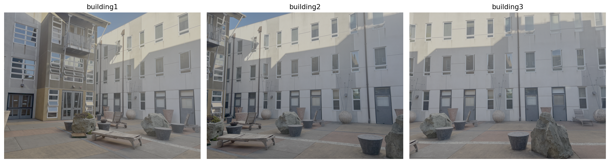
Building 1, Building 2, and Building 3.
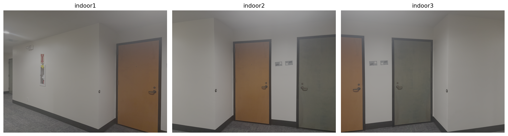
Indoor 1, Indoor 2, and Indoor 3.
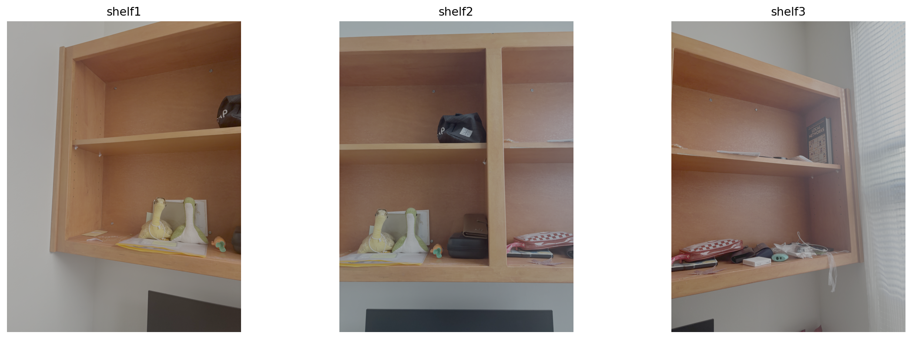
Shelf 1, Shelf 2, and Shelf 3.
A.2: Recover Homographies
Establishing point correspondences
I manually selected corresponding points between overlapping images using the correspondence student tool here. In all cases, I selected much more than four pairs depending on the available features.
The numbers of pairs I selected were:
Building: 25 pairs for building1 → building2 and 25 pairs for building3 → building2.
Indoor: 11 pairs for indoor1 → indoor2 and 18 pairs for indoor3 → indoor2.
Shelf: 18 pairs for shelf1 → shelf2 and 13 pairs for shelf3 → shelf2.
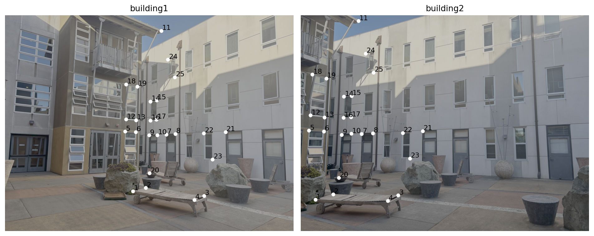
Building 1 → Building 2.
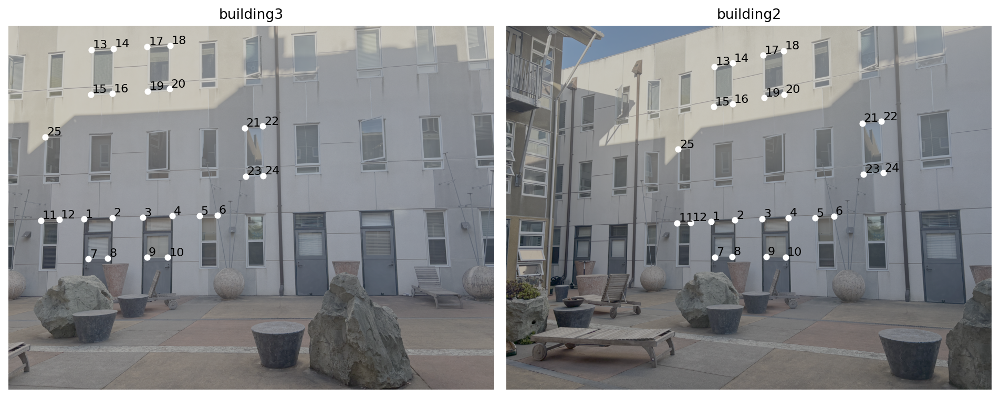
Building 3 → Building 2.
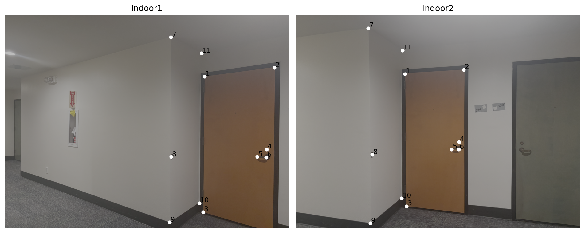
Indoor 1 → Indoor 2.
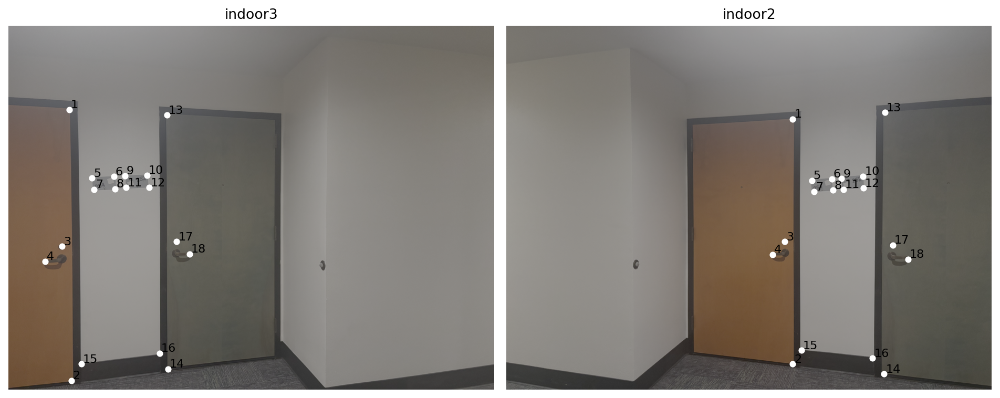
Indoor 3 → Indoor 2.
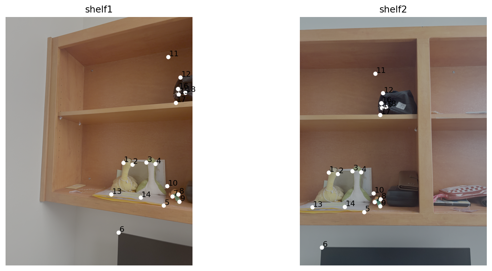
Shelf 1 → Shelf 2.
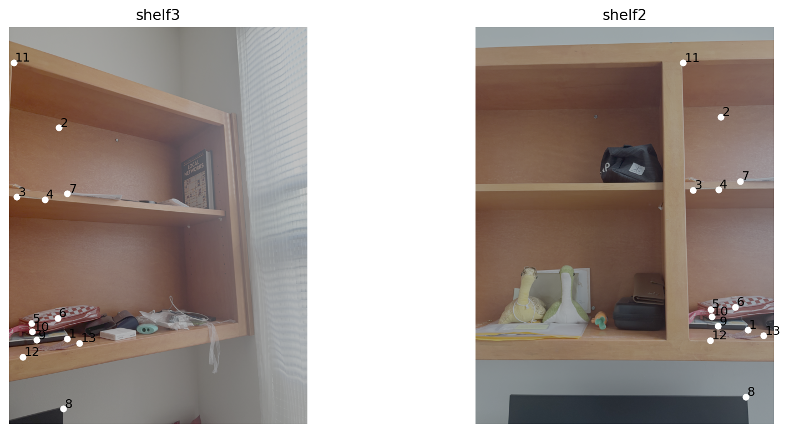
Shelf 3 → Shelf 2.
Homography equations and least squares
A homography is a 3×3 matrix that maps points from one image to another:
p′ ∼ Hp
Since H has 8 degrees of freedom, at least 4 point correspondences are required. Each pair provides two equations. I set the bottom-right entry to 1:
H = [[a, b, c], [d, e, f], [g, h, 1]]
For corresponding points (x, y) and (u, v), the equations are:
u = (ax + by + c) / (gx + hy + 1),
v = (dx + ey + f) / (gx + hy + 1)
Rearranging gives a linear system Ah = b. I used
np.linalg.lstsq() to solve for the 8 unknown parameters
and construct the 3×3 homography matrix.
For example, the following matrix maps points from building1 to building2.
Given a homography H, I used inverse warping. For every output pixel, I used the inverse homography to find its location in the original image:
p ∼ H−1p′
I implemented nearest-neighbor sampling and bilinear interpolation. Nearest neighbor samples the closest pixel, while bilinear interpolation uses a weighted average of four neighboring pixels.
Image rectification
For each image, I manually select the four corners of a
rectangular object and map them to a front-facing rectangle. These points are obatined with this tool.
The point order was top-left, top-right, bottom-left, bottom-right.
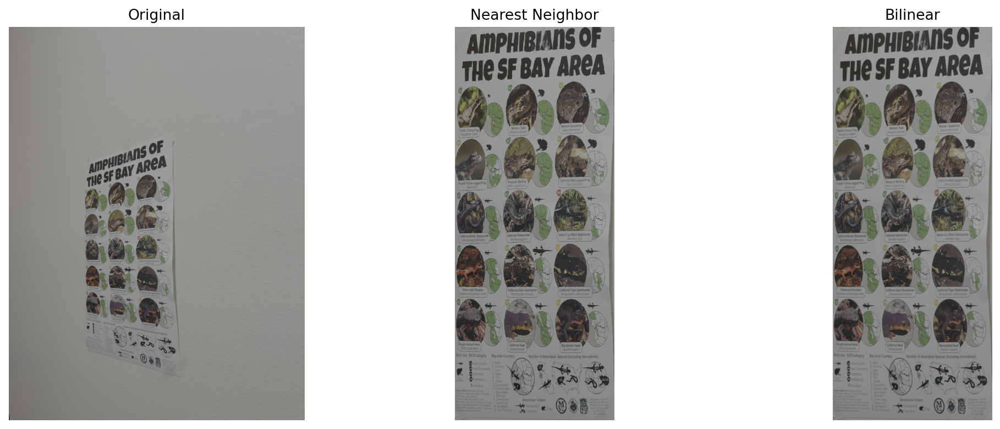
Rectification 1: original, nearest neighbor, and bilinear.
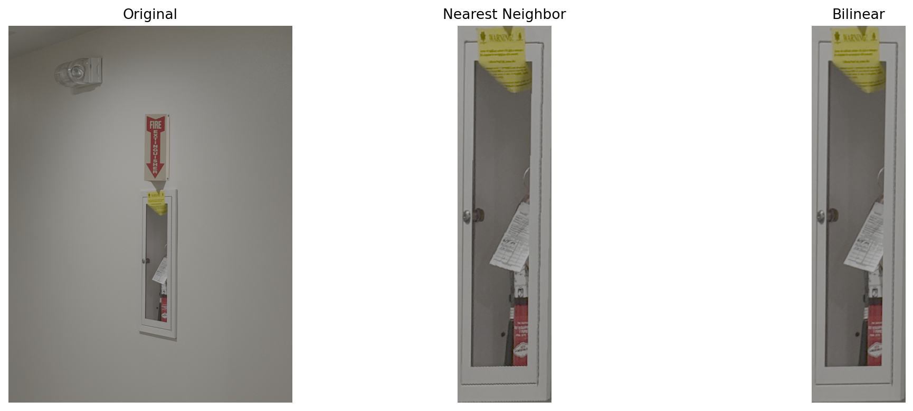
Rectification 2: original, nearest neighbor, and bilinear.
Nearest neighbor vs. bilinear
Rectification
Nearest Neighbor
Bilinear
Rectification 1
0.018 s
0.066 s
Rectification 2
0.003 s
0.014 s
Nearest neighbor is faster generally. The visual difference between the two methods is quite small. Nearest neighbor looks slightly more pixelated around some edges, while bilinear interpolation produces smoother results. However, bilinear can also make the image slightly blurry.
A.4: Blend the Images into a Mosaic
I used the middle image as the reference and warped the other images into its coordinate system. The general step is to first calculated the canvas size using the transformed image corners, then applied inverse warping with bilinear interpolation.
For blending, I used distance-based feathering. Pixels closer to the image edges get smaller weights, while pixels farther from the edges get larger weights. Then together with results above, I could combined the warped images using weighted averaging to reduce visible seams.
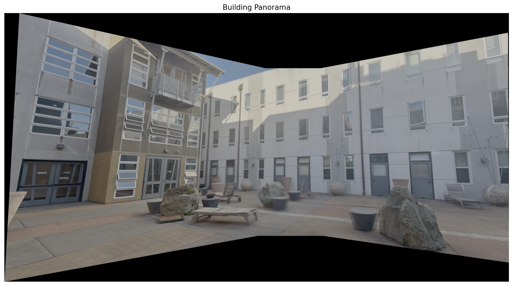
Building panorama from building1, building2, and building3.
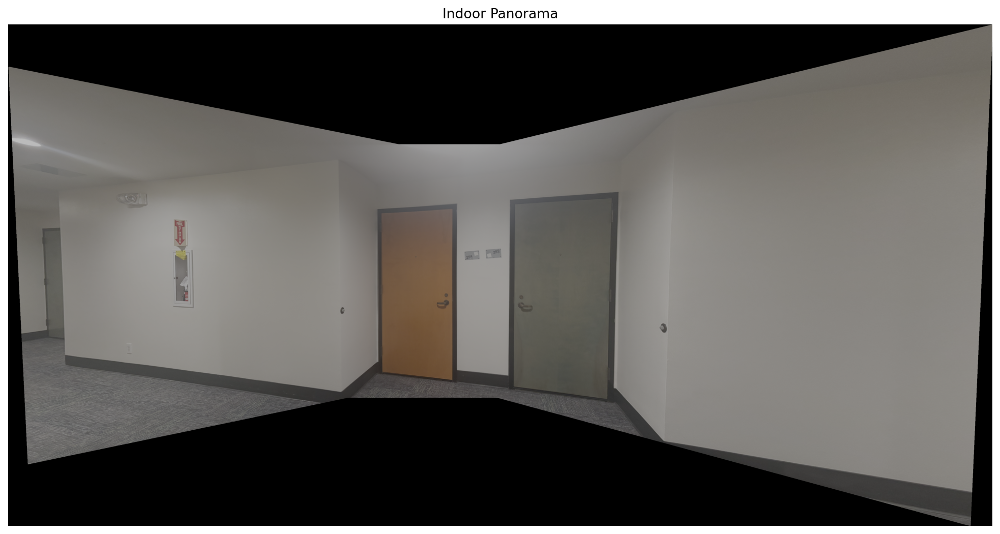
Indoor panorama from indoor1, indoor2, and indoor3.
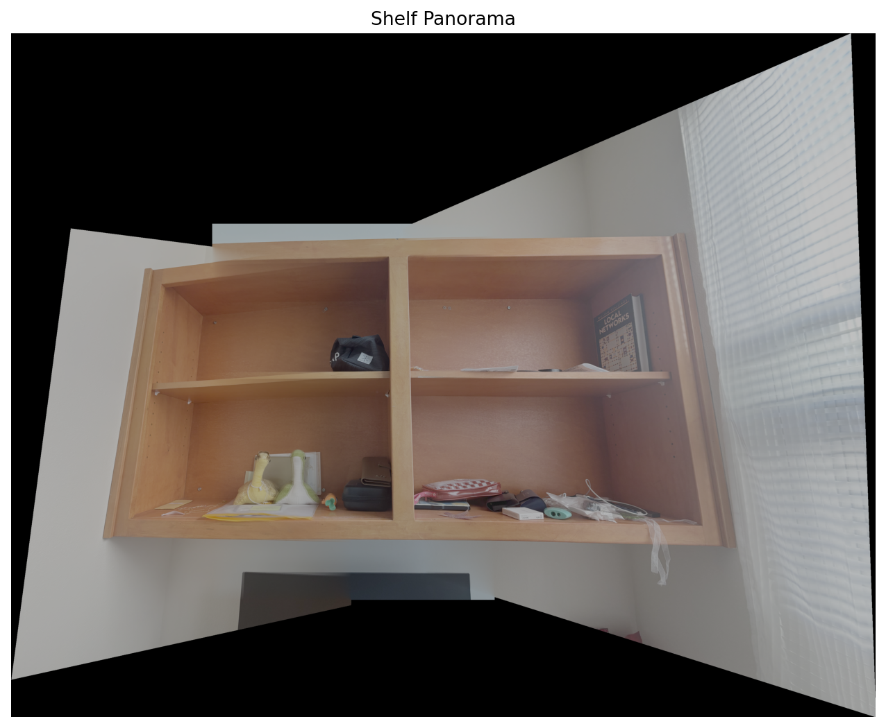
Shelf panorama from shelf1, shelf2, and shelf3.
A.5: Bells & Whistles — Cylindrical Projection
I implemented cylindrical projection to reduce distortion in wide panoramas. Each image is mapped onto a cylindrical surface using inverse warping and bilinear interpolation.
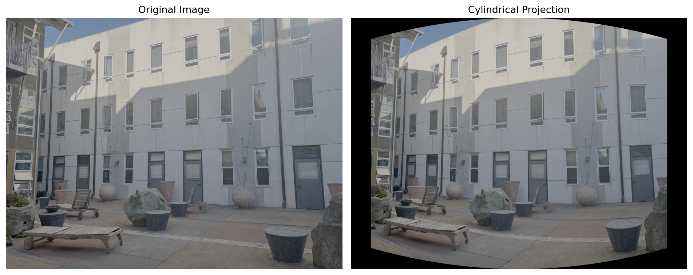
Building 2 before and after cylindrical projection with f = 1200.
Effect of focal length
Here, I did some experiments with different focal lengths. As introduced in lecture, long focal lengths could reduce distortion in wide panoramas. So I tried f = 800, 1200, and 1800 on the building, indoor, and shelf images. For the shelf, a smaller focal length made the wooden edges look too curved, so I used f = 1800. I kept f = 1200 for the building and indoor images.
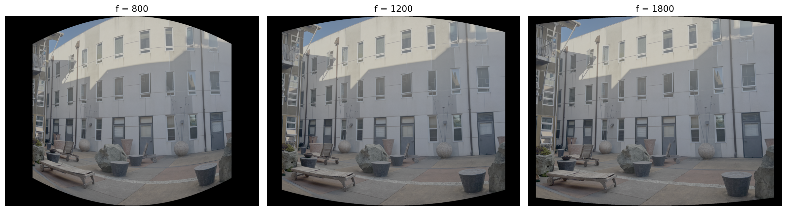
Building 2: f = 800, 1200, and 1800.
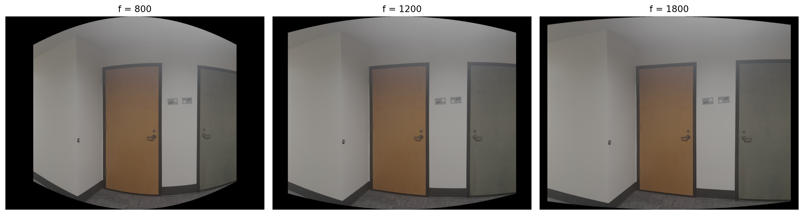
Indoor 2: f = 800, 1200, and 1800.
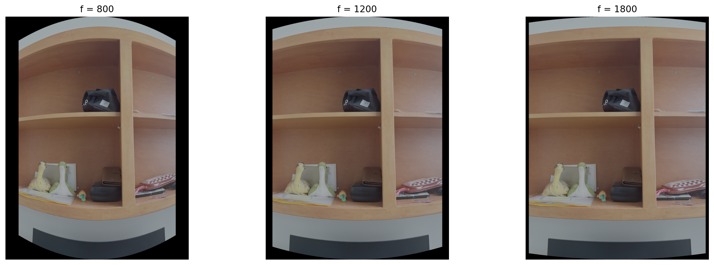
Shelf 2: f = 800, 1200, and 1800.
Cylindrical panoramas
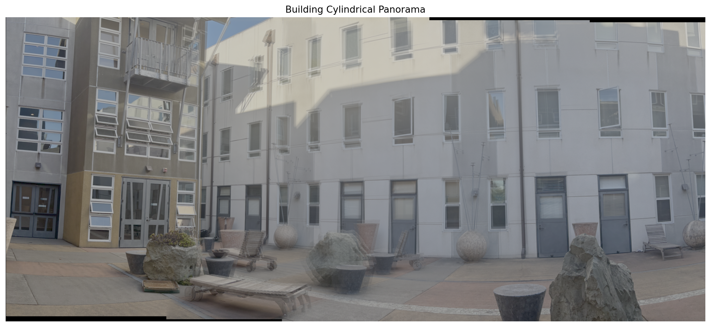
Building cylindrical panorama, f = 1200. (some ghosting present)
The cylindrical panorama shows more ghosting than the planar result.
I think this is partly because based on my design, I only used translation to align the cylindrical images, while the planar version uses a full homography. Small camera movements and an imperfect focal length estimate may also contribute to the misalignment.
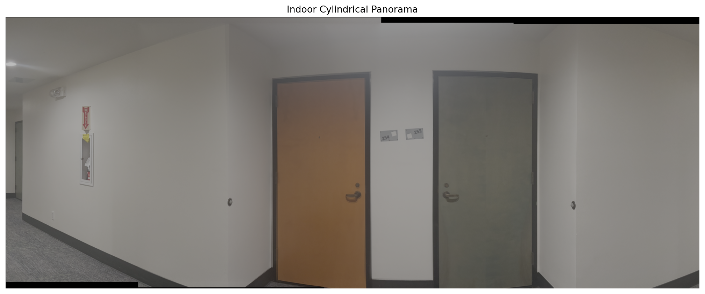
Indoor cylindrical panorama, f = 1200. (perfectly aligned)
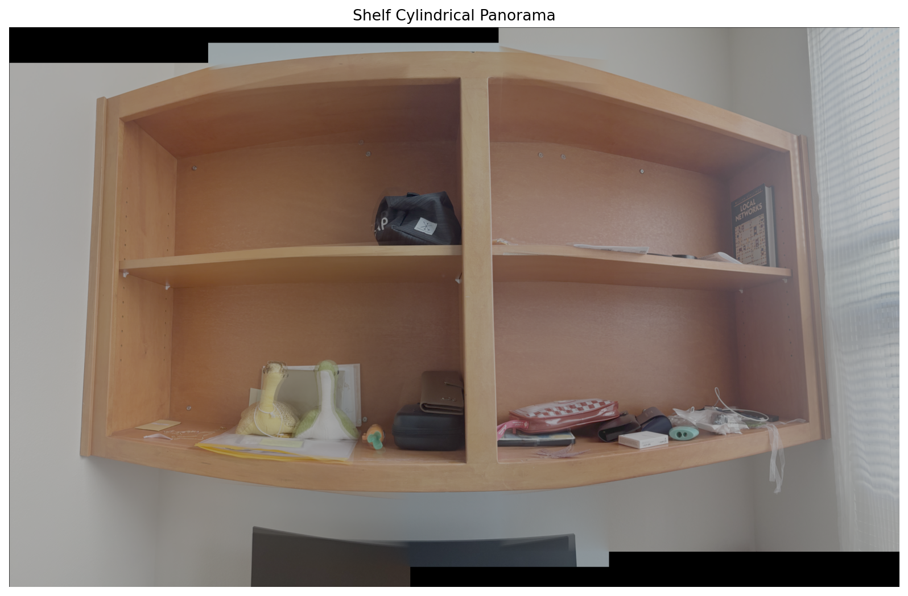
Shelf cylindrical panorama, f = 1800. (pretty good but looked curved <- cylindrical projection does not preserve horizontal straight lines )
Planar vs. cylindrical
The comparison below shows the planar panoramas from part 4 next to the cylindrical panoramas. Cylindrical projection is useful for the wider views because it changes how the image bends across the panorama, but it does not remove all of the small alignment differences between source photos.